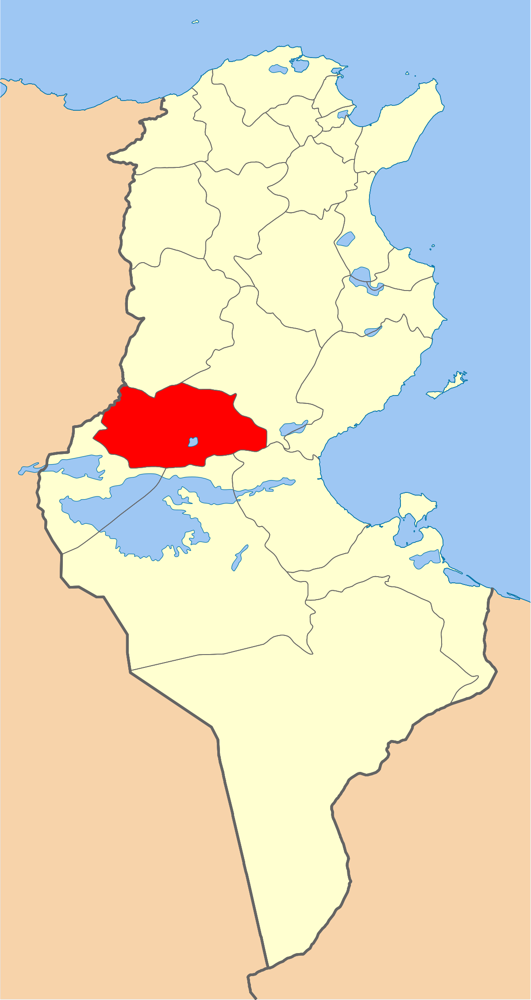
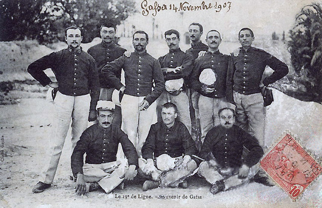
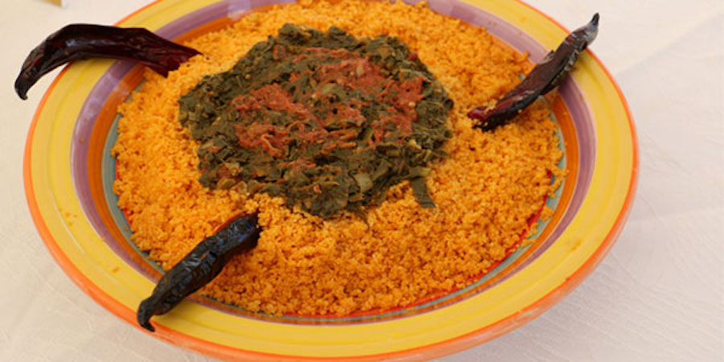
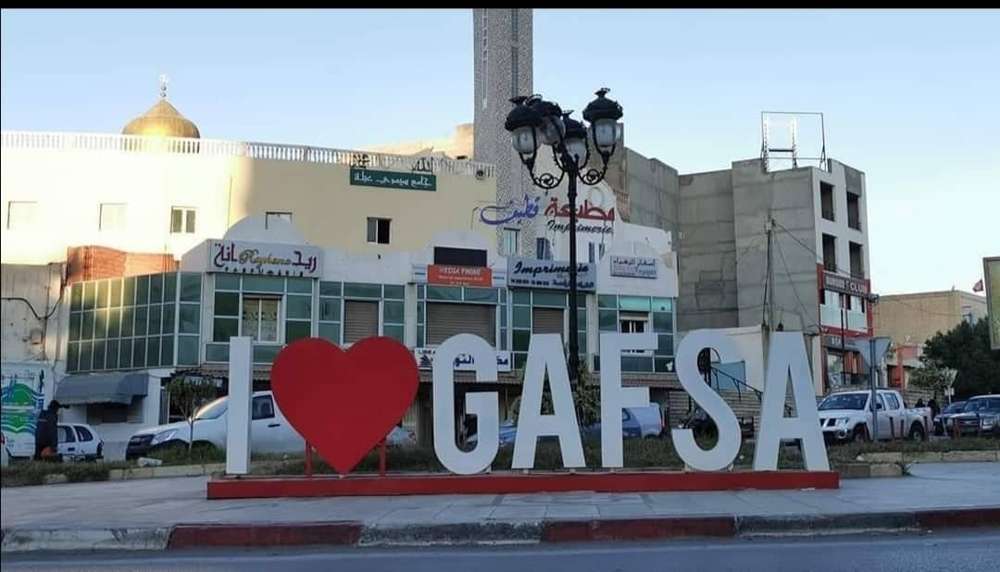
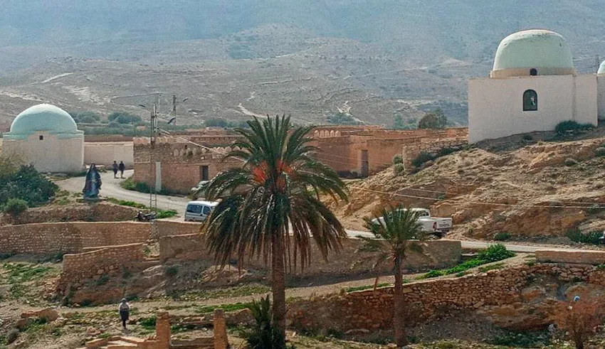

Gafsa
Le Gouvernorat de Gafsa se situe au Sud-Ouest de la Tunisie, entre les hautes steppes et le Sahara. Entouré de cinq gouvernorats et situé au centre de trois régions économiques, la ville de Gafsa est un trait d'union entre le pays du grain et celui des dattes et elle est l'une des plus anciennes cités du pays. Connue comme une région essentiellement minière, le phosphate est la première richesse de la région.
kasbah
Musée archéologique de Gafsa
Bassin romain
Grottes de Sened
Quelques chiffres
Superficie
7 807 Km²
Nombre de maisons
34 500
Habitants
349 700
Localisation
Elle est située à quelque 360 kilomètres au sud de la capitale Tunis et à environ 70 kilomètres de la frontière tuniso-algérienne, dans une trouée au milieu d'un alignement montagneux appelé « monts de Gafsa », entre le djebel Bou Ramli et le djebel Orbata qui culmine à 1 165 mètres. De par son emplacement, elle joue un rôle de carrefour sur les axes routiers reliant Tunis au sud du pays et l'Algérie à la Libye.

Histoire
Dans le cadre du protectorat français de Tunisie, Gafsa devient le lieu de cantonnement de compagnies disciplinaires de l'armée française. Ainsi, les mutins du 17e régiment d'infanterie de ligne y sont envoyés après leur refus d'obéissance de 1907. Durant la Seconde Guerre mondiale, en 1942 et 1943, la cité subit plusieurs bombardements allemands et une partie de la kasbah est détruite. Gafsa est le théâtre d'une bataille historique, opposant la 10e division de panzers et les forces alliées, connue sous le nom de bataille d'El Guettar. Le 13 février 1952, le khalifa (préfet) de Gafsa, Sliman Ben Hamouda, est abattu d'un coup de pistolet.

Culture
 hover me
hover me

hover me
hover me
hover me